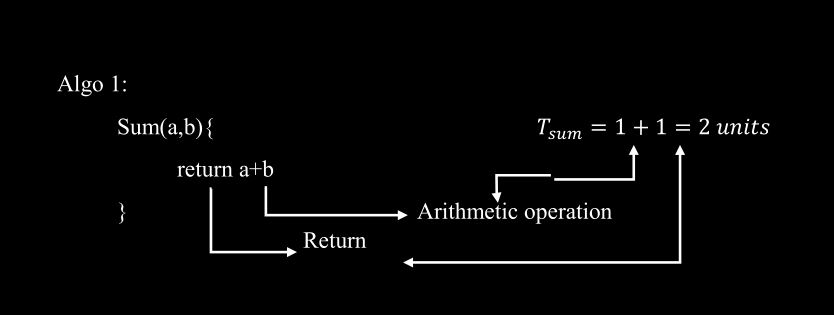
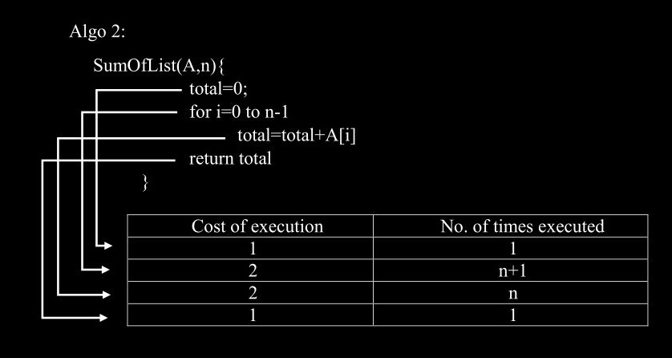
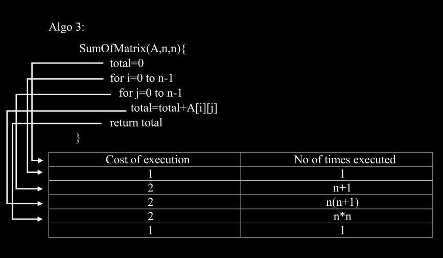

Time Complexity
Ever wondered why some programs take more time to perform
a given task, while the others take just fraction of a
second?
Why do we have so many different algorithms to perform one
particular operation?
Well, the answer is COMPLEXITY
We try to come up with new algorithms to solve a
particular problem to achieve better, more efficient
Complexities (both space and time).
Let us try to understand this:
Suppose we have a number N and we need to check whether it
is a prime number or not.
Person A gives the following algorithm:
for i=2 to N-1
if i divides N then
N is NOT prime
Person B gives the following algorithm:
for i=2 to √ N
if i divides N
N is NOT prime
Both the algorithms are correct and will yield the right
answer, but both behave differently to various input
values of N.
Let us see how:
Suppose the computer takes 1ms for a division operation.
For both the algorithms the worst case would be when N is
prime.
In worst case,
A’s algorithm runs and division is performed (N-2)
times.
Time taken by program
for n = 11
for n = 101
for n = 106 + 3
for n = 1010 + 9
T = 9ms
T = 99ms
T = 16.66 min
T= 115 days
In worst case,
B’s algorithm runs and division is performed
(√N-1) times.
Time taken by program
for n = 11
for n = 101
for n = 106 + 3
for n = 1010 + 9
T = 2ms
T = 9ms
T = 1 sec
T= 1.66 min
Therefore we can without doubt say, that B’s algorithm is
better than A’s because it takes much less time for large
values of N.
TIME COMPLEXITY of a program is a simple measurement of
how fast the time taken by the program grows, if the
input size increases.
Eg: In case of A, if input is N, then
T ∝ N
But in case of B, if input is N, then
T ∝ √ N
Therefore, we must choose algorithm B, because it behaves
well for larger input sizes.
How to calculate the running time of an
algorithm?
Running time is the actual time taken by an algorithm.
There are certain factors on which the running time
depends:
- Processor specifications
- Read/Write speed to memory
- 32bit or 64bit Architecture
- Other configurations of the machine
- INPUT
Though there are many aspects that can be considered, but
all we bother about is how our program behaves for various
inputs or how the time taken by the program grows with the
input of the program.
Mostly we are interested in the rate of growth of time
taken with respect to the input.
Concept of Model Machine:
We cannot just assume on which kind of machine our program
will be executed while writing the algorithms. So, we
define a hypothetical model machine where we will execute
our programs.
Characteristics:
- Single processor
- 32 bit architecture
- Sequential execution
-
1 unit time for arithmetical and logical operations
- 1 unit time for assignment and return.
So let us say we have 3 algorithms:


T sumoflist = 1 + n +1 + n + 1 = 4n + 4
For very large values of n, we can ignore the constant
and state that:
This time taken grows linearly as T
sumoflist ∝ n
This is called a LINEAR TIME ALGORITHM

T sumofmatrix = 1 + n + 1 + n ∗ n + n + n ∗ n
+ 1
T sumofmatrix = 4n 2 + 4n + 4
For very large values of n, 4n+4 will become
insignificant compared to 4n 2 and so we can
state that:
T sumofmatrix ∝ n 2
Therefore we have,
T sum = constant
T sumoflist = 4n + 4 (linear)
T sumofmatrix= 4n 2 + 4n + 4
(quadratic)
We can plot these versus input n. We will find that the
rate of growth of a quadratic function is much higher than
that of a linear function.
We often classify these functions in set, where the rate
of growth of all the functions in a particular set is very
similar.
Eg:
O(n 2 ) defines a set of all the functions of
the form T = an 2 + cn + d
O(n) defines a set of all the functions of the form T = an
+ c
O(1) defines a set of all the functions of the form T =
constant
This classification is done using
ASYMPTOTIC BOUNDS and O(𝑔(n)) is called
the Big-Oh notation which is an
asymptotic notation.